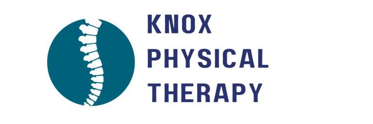
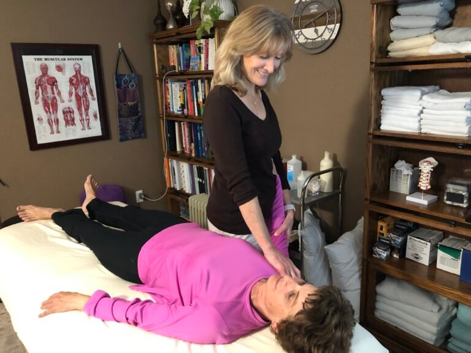
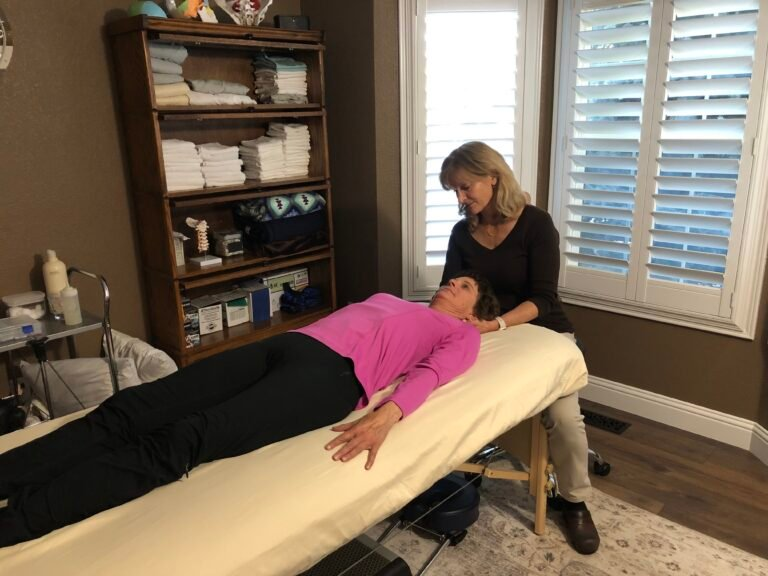

Orthopedic physical therapy
I treat a wide range of orthopedic conditions, from recent injuries to long-standing muscle and joint problems. If previous treatment hasn’t helped enough, I’ll take a fresh look at how you move and discuss other options.

Knox Physical Therapy
One-on-one physical therapy with Jeni Knox, PT, DPT, in Lafayette, Colorado. Each appointment lasts 60–75 minutes.
Pain may show up in one place, while the story behind it is bigger. I combine orthopedic assessment with a whole-body perspective to understand what may need attention.
I start by listening to you and your body. After the assessment, I use what I find to choose the hands-on techniques that best fit your needs and goals.
Get to know me ↗I’ll take time to hear what’s bothering you and what you’d like to work on. Then I’ll assess how you move and choose a treatment plan that fits my findings and your goals.
I treat a wide range of orthopedic conditions, from recent injuries to long-standing muscle and joint problems. If previous treatment hasn’t helped enough, I’ll take a fresh look at how you move and discuss other options.
Support before, during, and after pregnancy, including help with pelvic discomfort, urinary leakage, and concerns about pelvic organ prolapse.
If you have abdominal discomfort or digestive symptoms, I can help you decide whether physical therapy may be a useful part of your care.
Assessment for symptoms such as pain that travels down the leg, tingling, or numbness. I’ll look at how different positions and movements affect your symptoms.
I assess jaw and facial concerns such as jaw pain, stiffness, or difficulty opening your mouth. I use what I find to choose hands-on techniques for your jaw and the surrounding muscles and tissues.
Hands-on techniques to address joint mobility and movement.
Gentle hands-on work focused on the tissues surrounding the internal organs.
Light-touch techniques that focus on how nerves move in relation to nearby tissues.
A gentle approach using light touch around the head, spine, and sacrum.
Uses manual muscle testing to explore how muscles work together during movement.
A hands-on technique that focuses on the soft tissues around blood vessels.
An approach within CranioSacral Therapy that explores how emotional experiences may relate to physical sensations.
Set aside 60–75 minutes for your appointment with me.
We’ll talk about what brought you in, your symptoms, and your medical history.
Depending on your symptoms, I may assess joint motion, strength, and movements that are difficult for you. I may also assess how nerves and the tissues around your internal organs move to see whether neural or visceral work fits your treatment plan.
I’ll explain what I found and begin treatment during your first visit. Based on my assessment, I will use manual therapy and other hands-on techniques.
I’ll teach you exercises or movement strategies to practice between visits and show you how often to do them. I’ll also show you ways to adjust your posture to help you move more comfortably.


I’ve worked in physical therapy for more than 30 years. I founded Knox Physical Therapy in 2014 to give patients time for thorough, individual care.
I began my career in sports and orthopedic physical therapy, helping high school, college, and professional athletes recover from injuries or surgery. I earned my Doctorate of Physical Therapy and continued my training in joint mobilization, dry needling, and NeuroKinetic Therapy (NKT), earning Level 3 certification in NKT. I later completed training and earned certification in women’s pelvic health through the Institute for Birth Healing.
When I discovered the Barral Institute, I began studying visceral, neural, vascular, and cranial techniques, including manual approaches focused on the brain and surrounding structures. I completed the testing required to serve as a teaching assistant for the Barral Institute. I also took CranioSacral Therapy courses through the Upledger Institute. I bring that range of training to each visit and draw on it based on what I learn about you and your goals.
I still look forward to taking classes and learning from clinicians and health professionals across different fields. Hearing how others approach care gives me new ways to think through what might help each patient who comes to my office.
Jeni is an extraordinary physical therapist whose thoughtful, patient approach sets her apart. Rather than just treating surface-level symptoms, she listens carefully and puts all the pieces of the puzzle together to uncover the true underlying root cause. By seamlessly blending traditional physical therapy with visceral manipulation, manual therapy, and other specialized techniques, which she keeps sharp through continuous advanced training, she has helped me resolve persistent aches and pains, improve my posture, and most importantly, heal past trauma. It is rare to find a practitioner so deeply skilled who is also genuinely invested in her patients’ long-term well-being, and I wholeheartedly recommend her to anyone looking to truly heal.
I went to Jennifer for PT for a persistent back issue and she discovered the root cause was a hip problem. Slowly on the mend. Can’t thank Jennifer enough.
Jeni has literally changed my life! I’ve worked with her for over a decade. She’s seen me through hip and back issues, multiple injuries, surgeries, and PTSD symptoms. Jeni treats my body as a whole. By finding the source of any physical pain, restriction, or imbalances, she gets to the root cause. This leads to tremendous results. I leave my appointments feeling noticeable changes in how my body moves, my posture, breathing patterns, nervous system state, and more.
Jeni is a fantastically talented and inquisitive PT. She is able to discover the root cause of issues in a way that shows she truly understands the anatomical and physiological connections in your body. Jeni excels at manual therapy and you see immediate improvement after seeing her. She has expertise in both traditional and cutting edge techniques that are effective when treating your body. I cannot recommend her care enough!
Appointments last 60–75 minutes.
Call, text, or email me to request an appointment.
Wear clothes that let you move comfortably and help me see how you move during the assessment. Leggings or shorts with a camisole or tank top work well, and so do shorts with a T-shirt. In colder weather, feel free to bring a change of clothes. Please bring any relevant paperwork.
An initial evaluation costs $175. Each follow-up treatment costs $160.
I accept cash, checks, credit cards, and mobile payments such as Zelle.
I don’t accept insurance, but I can provide a superbill that you can submit to your insurance company.
No. Colorado allows direct access to physical therapy, so you can schedule an appointment without a doctor’s referral.
The clinic is in Lafayette, CO.
Get in touch with me to ask a question or arrange your visit.